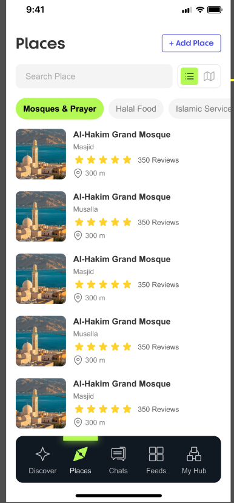
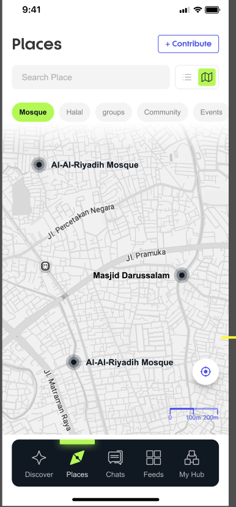
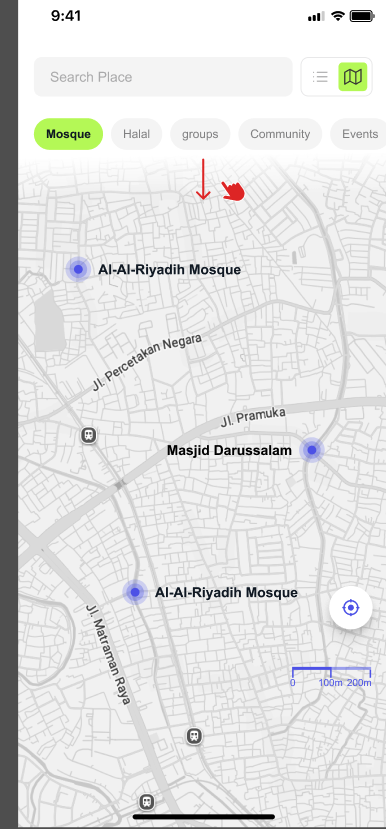
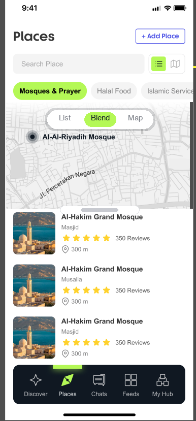

Places · Hybrid Mode RedesignBlend by default
The "After" below is not a redraw — it is the original list-screen screenshot with the real Figma map cropped from the map screen and 2 new controls layered on top.
Original Figma DesignFully Kept

① List view · Current default

② Map view · Mutually exclusive toggle

③ Place detail · Full-screen overlay

④ Map interaction mode
Redesign strategy: pure list = screen ① reused as-is; pure map = screens ②/④ reused as-is; detail = screen ③ reused as-is. All three modes reuse existing Figma pages; this draft only adds one new "Hybrid Mode" screen.
Before / AfterOriginal Base + Modification Layer
● Current: pure list by default
1
2
3
● After: hybrid mode by default

1
2
3
4
Modification List
| # | Modification layer (green · all overlays, original untouched) | Notes |
|---|---|---|
| 1 | Three-state segmented control List / Blend / Map, floating on top of the map, Blend selected by default (brand green #b4f856, matching the chips / nav active states) | The original design only had a mutually exclusive List⇄Map dual-icon toggle in the top-right corner; after expanding to three states the original dual icons remain usable (tap List = screen ①, tap Map = screen ②) |
| 2 | Upper map area: real Figma map cropped from screen ② (with pins such as Al-Ai-Riyadh Mosque), shown by location info | Replaces the pixels of the first 2 list cards in that area; the map is interactive: drag / zoom, with the same pin set as screens ②/④ |
| 3 | Draggable split handle: drag up/down to adjust the map/list ratio (about 40:60 by default) | Drag fully up = pure map (screen ②), drag fully down = pure list (screen ①), with seamless transitions among the three states |
| 4 | Lower list area kept as-is: the Al-Hakim Grand Mosque card, rating, and distance are all original pixels | Two-way linkage: tap a map pin → the list scrolls to the matching card and highlights it; tap a card → the map focuses the matching pin |
Current Issues (Red Dots)
| # | Issue |
|---|---|
| 1 | List is the only default; the spatial distribution of "what's nearby" is completely invisible |
| 2 | Mutually exclusive List⇄Map toggle (small icon top-right); switching away loses all list context |
| 3 | Cards lack a distance-sort comparison (all 300 m), and in map mode search results are not linked to the pins |
Additional interaction rules: when location permission is downgraded, the map falls back to city level while the list stays sorted by distance; in Guest Mode the hybrid view is fully browsable, and the login wall only triggers on pin detail → navigate / call (following GUEST-FLOW rules).